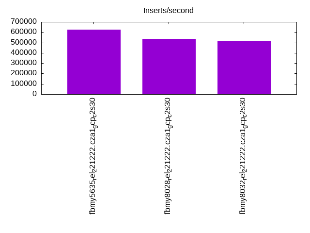
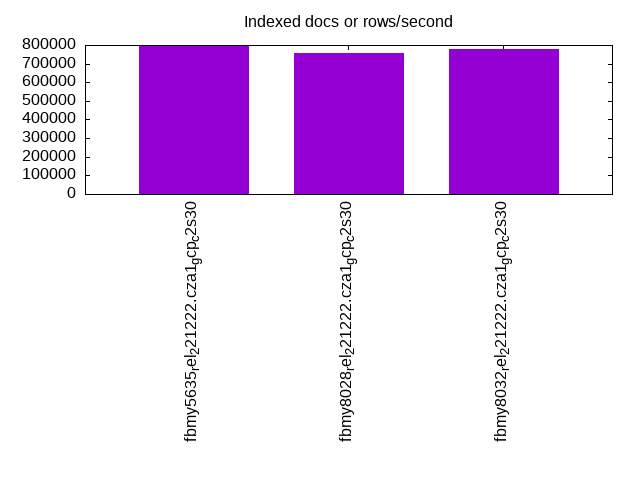
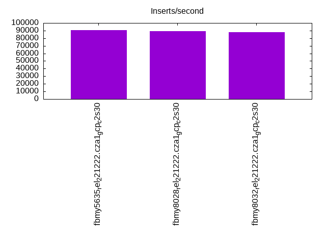
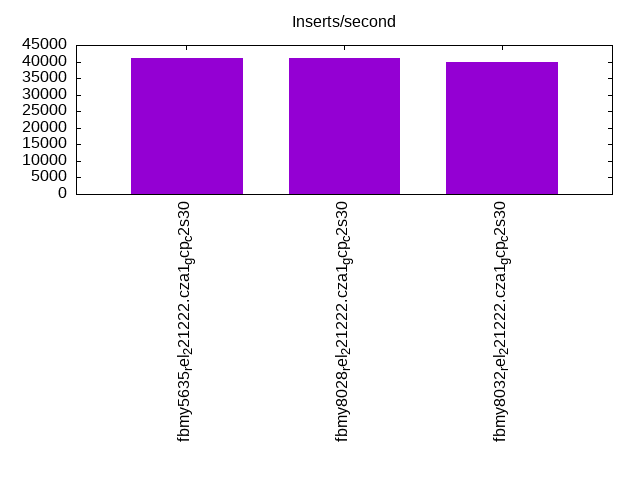
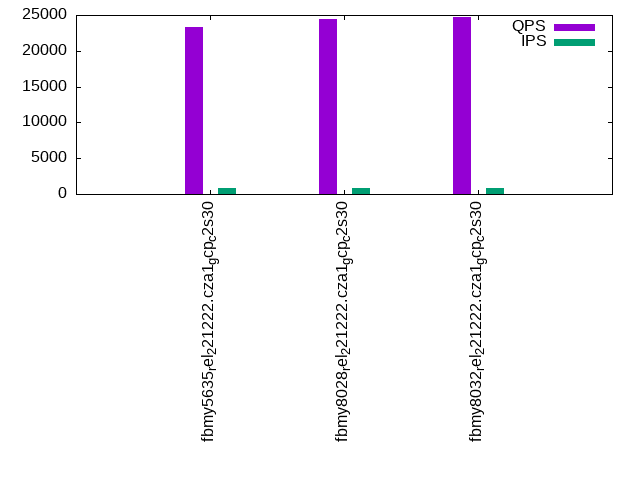
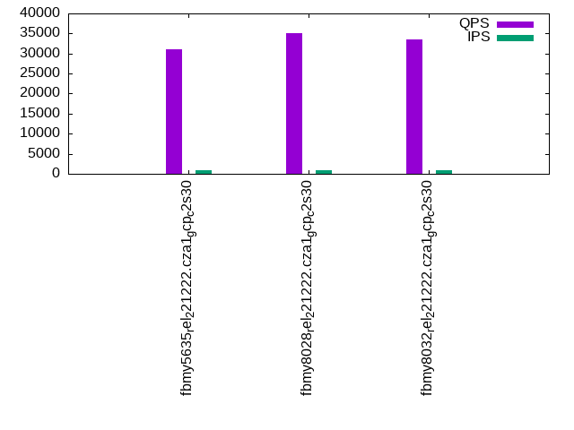
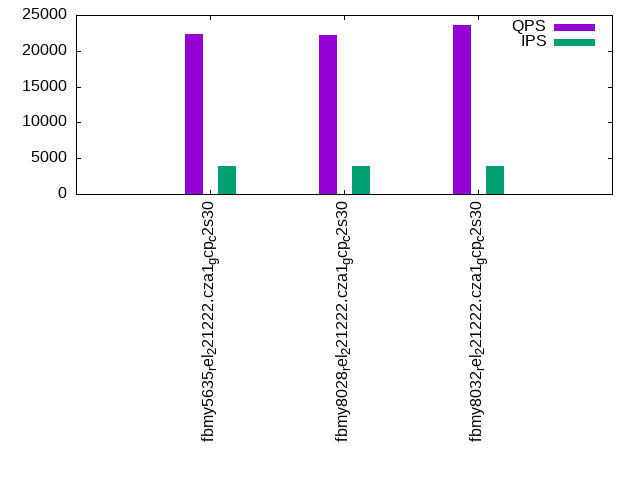
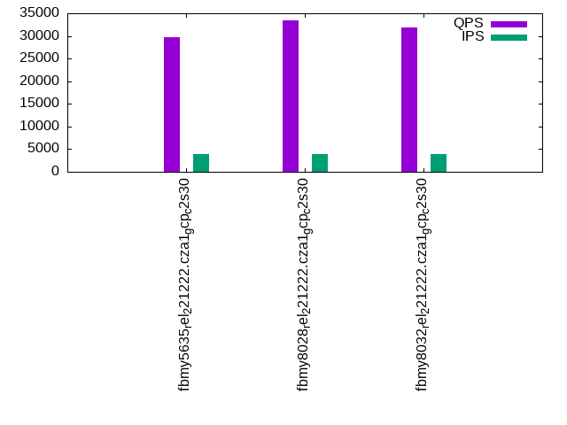
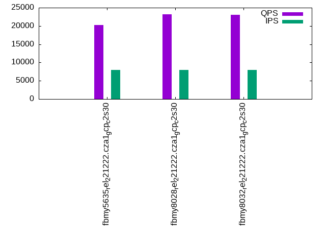
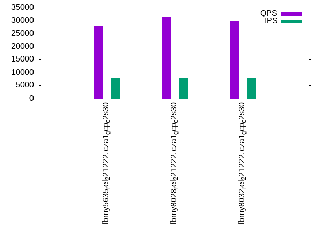

This is a report for the insert benchmark with 160M docs and 8 client(s). It is generated by scripts (bash, awk, sed) and Tufte might not be impressed. An overview of the insert benchmark is here and a short update is here. Below, by DBMS, I mean DBMS+version.config. An example is my8020.c10b40 where my means MySQL, 8020 is version 8.0.20 and c10b40 is the name for the configuration file.
The test server is a c2-standard-30 from GCP with 15 cores, hyperthreads disabled, Ubuntu 22.04 and XFS using SW RAID 0 over 4 local SSDs. The benchmark was run with 8 clients and there were 1, 2 or 3 connections per client. It uses 8 tables with a client per table. It loads 20M rows per table without secondary indexes, creates 3 secondary indexes per table, then inserts 50m+50m rows per table with a delete per insert to avoid growing the table. It then does 6 read+write tests for 1200s each that do queries as fast as possible with 100,100,500,500,1000,1000 inserts/s and the same for deletes/s per client concurrent with the queries. The database is cached in memory. Clients and the DBMS share one server. The per-database configs are in the per-database subdirectories here.
The tested DBMS are:
The numbers are inserts/s for l.i0, l.i1 and l.i2, indexed docs (or rows) /s for l.x and queries/s for qr100, qp100 thru qr1000, qp1000" The values are the average rate over the entire test for inserts (IPS) and queries (QPS). The range of values for IPS and QPS is split into 3 parts: bottom 25%, middle 50%, top 25%. Values in the bottom 25% have a red background, values in the top 25% have a green background and values in the middle have no color. A gray background is used for values that can be ignored because the DBMS did not sustain the target insert rate. Red backgrounds are not used when the minimum value is within 80% of the max value.
| dbms | l.i0 | l.x | l.i1 | l.i2 | qr100 | qp100 | qr500 | qp500 | qr1000 | qp1000 |
|---|---|---|---|---|---|---|---|---|---|---|
| fbmy5635_rel_221222.cza1_gcp_c2s30 | 622568 | 800000 | 90370 | 41216 | 23293 | 31148 | 22313 | 29668 | 20198 | 27849 |
| fbmy8028_rel_221222.cza1_gcp_c2s30 | 536913 | 758294 | 89536 | 41195 | 24414 | 35102 | 22244 | 33340 | 23151 | 31341 |
| fbmy8032_rel_221222.cza1_gcp_c2s30 | 514469 | 776700 | 88033 | 39960 | 24778 | 33476 | 23576 | 31868 | 23008 | 29824 |
This table has relative throughput, throughput for the DBMS relative to the DBMS in the first line, using the absolute throughput from the previous table. Values less than 0.95 have a yellow background. Values greater than 1.05 have a blue background.
| dbms | l.i0 | l.x | l.i1 | l.i2 | qr100 | qp100 | qr500 | qp500 | qr1000 | qp1000 |
|---|---|---|---|---|---|---|---|---|---|---|
| fbmy5635_rel_221222.cza1_gcp_c2s30 | 1.00 | 1.00 | 1.00 | 1.00 | 1.00 | 1.00 | 1.00 | 1.00 | 1.00 | 1.00 |
| fbmy8028_rel_221222.cza1_gcp_c2s30 | 0.86 | 0.95 | 0.99 | 1.00 | 1.05 | 1.13 | 1.00 | 1.12 | 1.15 | 1.13 |
| fbmy8032_rel_221222.cza1_gcp_c2s30 | 0.83 | 0.97 | 0.97 | 0.97 | 1.06 | 1.07 | 1.06 | 1.07 | 1.14 | 1.07 |
This lists the average rate of inserts/s for the tests that do inserts concurrent with queries. For such tests the query rate is listed in the table above. The read+write tests are setup so that the insert rate should match the target rate every second. Cells that are not at least 95% of the target have a red background to indicate a failure to satisfy the target.
| dbms | qr100.L1 | qp100.L2 | qr500.L3 | qp500.L4 | qr1000.L5 | qp1000.L6 |
|---|---|---|---|---|---|---|
| fbmy5635_rel_221222.cza1_gcp_c2s30 | 794 | 793 | 3970 | 3970 | 7947 | 7947 |
| fbmy8028_rel_221222.cza1_gcp_c2s30 | 794 | 794 | 3970 | 3970 | 7947 | 7947 |
| fbmy8032_rel_221222.cza1_gcp_c2s30 | 794 | 794 | 3967 | 3967 | 7940 | 7940 |
| target | 800 | 800 | 4000 | 4000 | 8000 | 8000 |
l.i0: load without secondary indexes. Graphs for performance per 1-second interval are here.
Average throughput:
Insert response time histogram: each cell has the percentage of responses that take <= the time in the header and max is the max response time in seconds. For the max column values in the top 25% of the range have a red background and in the bottom 25% of the range have a green background. The red background is not used when the min value is within 80% of the max value.
| dbms | 256us | 1ms | 4ms | 16ms | 64ms | 256ms | 1s | 4s | 16s | gt | max |
|---|---|---|---|---|---|---|---|---|---|---|---|
| fbmy5635_rel_221222.cza1_gcp_c2s30 | 37.038 | 62.935 | 0.012 | 0.001 | 0.008 | 0.006 | 0.391 | ||||
| fbmy8028_rel_221222.cza1_gcp_c2s30 | 7.254 | 92.607 | 0.116 | 0.007 | 0.012 | 0.004 | 0.333 | ||||
| fbmy8032_rel_221222.cza1_gcp_c2s30 | 2.937 | 96.917 | 0.122 | 0.007 | 0.015 | 0.003 | 0.337 |
Performance metrics for the DBMS listed above. Some are normalized by throughput, others are not. Legend for results is here.
ips qps rps rmbps wps wmbps rpq rkbpq wpi wkbpi csps cpups cspq cpupq dbgb1 dbgb2 rss maxop p50 p99 tag 622568 0 0 0.0 519.1 142.7 0.000 0.000 0.001 0.235 71944 72.4 0.116 17 4.7 6.2 1.3 0.391 85036 55140 fbmy5635_rel_221222.cza1_gcp_c2s30 536913 0 0 0.0 458.8 123.4 0.000 0.000 0.001 0.235 61941 73.2 0.115 20 4.7 6.4 1.7 0.333 72321 50345 fbmy8028_rel_221222.cza1_gcp_c2s30 514469 0 0 0.0 442.3 119.0 0.000 0.000 0.001 0.237 59687 72.3 0.116 21 4.6 6.4 1.7 0.337 70622 46949 fbmy8032_rel_221222.cza1_gcp_c2s30
l.x: create secondary indexes.
Average throughput:
Performance metrics for the DBMS listed above. Some are normalized by throughput, others are not. Legend for results is here.
ips qps rps rmbps wps wmbps rpq rkbpq wpi wkbpi csps cpups cspq cpupq dbgb1 dbgb2 rss maxop p50 p99 tag 800000 0 1 0.1 304.2 108.2 0.000 0.000 0.000 0.139 1341 49.2 0.002 9 10.5 12.0 11.0 0.002 NA NA fbmy5635_rel_221222.cza1_gcp_c2s30 758294 0 1 0.1 291.1 106.3 0.000 0.000 0.000 0.144 1428 48.6 0.002 10 10.4 12.0 13.2 0.003 NA NA fbmy8028_rel_221222.cza1_gcp_c2s30 776700 0 1 0.1 292.9 108.0 0.000 0.000 0.000 0.142 1776 50.0 0.002 10 10.4 12.2 13.1 0.003 NA NA fbmy8032_rel_221222.cza1_gcp_c2s30
l.i1: continue load after secondary indexes created with 50 inserts per transaction. Graphs for performance per 1-second interval are here.
Average throughput:
Insert response time histogram: each cell has the percentage of responses that take <= the time in the header and max is the max response time in seconds. For the max column values in the top 25% of the range have a red background and in the bottom 25% of the range have a green background. The red background is not used when the min value is within 80% of the max value.
| dbms | 256us | 1ms | 4ms | 16ms | 64ms | 256ms | 1s | 4s | 16s | gt | max |
|---|---|---|---|---|---|---|---|---|---|---|---|
| fbmy5635_rel_221222.cza1_gcp_c2s30 | 0.044 | 36.867 | 62.973 | 0.100 | 0.010 | 0.006 | 0.443 | ||||
| fbmy8028_rel_221222.cza1_gcp_c2s30 | 0.015 | 35.087 | 64.776 | 0.103 | 0.014 | 0.004 | 0.467 | ||||
| fbmy8032_rel_221222.cza1_gcp_c2s30 | 0.003 | 33.124 | 66.755 | 0.098 | 0.014 | 0.005 | nonzero | 1.012 |
Delete response time histogram: each cell has the percentage of responses that take <= the time in the header and max is the max response time in seconds. For the max column values in the top 25% of the range have a red background and in the bottom 25% of the range have a green background. The red background is not used when the min value is within 80% of the max value.
| dbms | 256us | 1ms | 4ms | 16ms | 64ms | 256ms | 1s | 4s | 16s | gt | max |
|---|---|---|---|---|---|---|---|---|---|---|---|
| fbmy5635_rel_221222.cza1_gcp_c2s30 | 0.044 | 37.774 | 62.068 | 0.099 | 0.010 | 0.005 | 0.445 | ||||
| fbmy8028_rel_221222.cza1_gcp_c2s30 | 0.019 | 38.363 | 61.502 | 0.098 | 0.014 | 0.004 | 0.477 | ||||
| fbmy8032_rel_221222.cza1_gcp_c2s30 | 0.005 | 35.495 | 64.387 | 0.094 | 0.014 | 0.005 | nonzero | 1.011 |
Performance metrics for the DBMS listed above. Some are normalized by throughput, others are not. Legend for results is here.
ips qps rps rmbps wps wmbps rpq rkbpq wpi wkbpi csps cpups cspq cpupq dbgb1 dbgb2 rss maxop p50 p99 tag 90370 0 4 0.4 553.0 161.6 0.000 0.004 0.006 1.831 60246 59.6 0.667 99 12.2 12.6 50.3 0.443 11587 8444 fbmy5635_rel_221222.cza1_gcp_c2s30 89536 0 4 0.4 565.2 159.5 0.000 0.004 0.006 1.824 54886 63.3 0.613 106 13.1 13.6 51.7 0.467 11437 7941 fbmy8028_rel_221222.cza1_gcp_c2s30 88033 0 4 0.4 568.6 161.6 0.000 0.004 0.006 1.880 53274 64.5 0.605 110 14.8 15.5 51.7 1.012 11192 7792 fbmy8032_rel_221222.cza1_gcp_c2s30
l.i2: continue load after secondary indexes created with 5 inserts per transaction. Graphs for performance per 1-second interval are here.
Average throughput:
Insert response time histogram: each cell has the percentage of responses that take <= the time in the header and max is the max response time in seconds. For the max column values in the top 25% of the range have a red background and in the bottom 25% of the range have a green background. The red background is not used when the min value is within 80% of the max value.
| dbms | 256us | 1ms | 4ms | 16ms | 64ms | 256ms | 1s | 4s | 16s | gt | max |
|---|---|---|---|---|---|---|---|---|---|---|---|
| fbmy5635_rel_221222.cza1_gcp_c2s30 | 0.068 | 84.539 | 15.354 | 0.035 | 0.005 | 0.050 | |||||
| fbmy8028_rel_221222.cza1_gcp_c2s30 | 0.003 | 79.350 | 20.536 | 0.106 | 0.003 | 0.002 | 0.001 | 0.311 | |||
| fbmy8032_rel_221222.cza1_gcp_c2s30 | 0.001 | 75.378 | 24.499 | 0.118 | 0.003 | 0.001 | nonzero | 0.315 |
Delete response time histogram: each cell has the percentage of responses that take <= the time in the header and max is the max response time in seconds. For the max column values in the top 25% of the range have a red background and in the bottom 25% of the range have a green background. The red background is not used when the min value is within 80% of the max value.
| dbms | 256us | 1ms | 4ms | 16ms | 64ms | 256ms | 1s | 4s | 16s | gt | max |
|---|---|---|---|---|---|---|---|---|---|---|---|
| fbmy5635_rel_221222.cza1_gcp_c2s30 | 0.002 | 65.324 | 34.630 | 0.038 | 0.006 | 0.050 | |||||
| fbmy8028_rel_221222.cza1_gcp_c2s30 | 71.213 | 28.671 | 0.110 | 0.003 | 0.002 | 0.001 | 0.312 | ||||
| fbmy8032_rel_221222.cza1_gcp_c2s30 | 66.447 | 33.428 | 0.120 | 0.003 | 0.001 | nonzero | 0.286 |
Performance metrics for the DBMS listed above. Some are normalized by throughput, others are not. Legend for results is here.
ips qps rps rmbps wps wmbps rpq rkbpq wpi wkbpi csps cpups cspq cpupq dbgb1 dbgb2 rss maxop p50 p99 tag 41216 0 0 0.0 302.9 66.7 0.000 0.000 0.007 1.657 249372 64.3 6.050 234 11.8 11.9 61.3 0.050 5281 3218 fbmy5635_rel_221222.cza1_gcp_c2s30 41195 0 0 0.0 318.3 71.8 0.000 0.000 0.008 1.785 224513 68.3 5.450 249 12.0 12.3 62.3 0.311 5394 3082 fbmy8028_rel_221222.cza1_gcp_c2s30 39960 0 0 0.0 308.4 70.3 0.000 0.000 0.008 1.802 217218 68.4 5.436 257 12.0 12.3 62.4 0.315 5241 3061 fbmy8032_rel_221222.cza1_gcp_c2s30
qr100.L1: range queries with 100 insert/s per client. Graphs for performance per 1-second interval are here.
Average throughput:
Query response time histogram: each cell has the percentage of responses that take <= the time in the header and max is the max response time in seconds. For max values in the top 25% of the range have a red background and in the bottom 25% of the range have a green background. The red background is not used when the min value is within 80% of the max value.
| dbms | 256us | 1ms | 4ms | 16ms | 64ms | 256ms | 1s | 4s | 16s | gt | max |
|---|---|---|---|---|---|---|---|---|---|---|---|
| fbmy5635_rel_221222.cza1_gcp_c2s30 | 66.840 | 29.441 | 3.719 | nonzero | nonzero | 0.055 | |||||
| fbmy8028_rel_221222.cza1_gcp_c2s30 | 68.634 | 29.315 | 2.051 | nonzero | nonzero | 0.040 | |||||
| fbmy8032_rel_221222.cza1_gcp_c2s30 | 67.401 | 30.173 | 2.426 | nonzero | nonzero | 0.029 |
Insert response time histogram: each cell has the percentage of responses that take <= the time in the header and max is the max response time in seconds. For max values in the top 25% of the range have a red background and in the bottom 25% of the range have a green background. The red background is not used when the min value is within 80% of the max value.
| dbms | 256us | 1ms | 4ms | 16ms | 64ms | 256ms | 1s | 4s | 16s | gt | max |
|---|---|---|---|---|---|---|---|---|---|---|---|
| fbmy5635_rel_221222.cza1_gcp_c2s30 | 2.474 | 93.229 | 4.276 | 0.021 | 0.042 | ||||||
| fbmy8028_rel_221222.cza1_gcp_c2s30 | 0.370 | 98.875 | 0.755 | 0.009 | |||||||
| fbmy8032_rel_221222.cza1_gcp_c2s30 | 0.453 | 99.219 | 0.328 | 0.005 |
Delete response time histogram: each cell has the percentage of responses that take <= the time in the header and max is the max response time in seconds. For max values in the top 25% of the range have a red background and in the bottom 25% of the range have a green background. The red background is not used when the min value is within 80% of the max value.
| dbms | 256us | 1ms | 4ms | 16ms | 64ms | 256ms | 1s | 4s | 16s | gt | max |
|---|---|---|---|---|---|---|---|---|---|---|---|
| fbmy5635_rel_221222.cza1_gcp_c2s30 | 2.708 | 93.016 | 4.255 | 0.021 | 0.042 | ||||||
| fbmy8028_rel_221222.cza1_gcp_c2s30 | 4.224 | 95.260 | 0.510 | 0.005 | 0.019 | ||||||
| fbmy8032_rel_221222.cza1_gcp_c2s30 | 2.599 | 97.130 | 0.271 | 0.015 |
Performance metrics for the DBMS listed above. Some are normalized by throughput, others are not. Legend for results is here.
ips qps rps rmbps wps wmbps rpq rkbpq wpi wkbpi csps cpups cspq cpupq dbgb1 dbgb2 rss maxop p50 p99 tag 794 23293 0 0.0 14.0 3.0 0.000 0.000 0.018 3.888 90555 52.8 3.888 340 11.4 11.6 62.7 0.055 3101 2814 fbmy5635_rel_221222.cza1_gcp_c2s30 794 24414 0 0.0 15.1 3.3 0.000 0.000 0.019 4.258 94704 53.2 3.879 327 11.4 11.8 63.5 0.040 3676 3388 fbmy8028_rel_221222.cza1_gcp_c2s30 794 24778 0 0.0 12.1 2.5 0.000 0.000 0.015 3.192 96044 53.0 3.876 321 11.4 11.8 63.6 0.029 3021 2765 fbmy8032_rel_221222.cza1_gcp_c2s30
qp100.L2: point queries with 100 insert/s per client. Graphs for performance per 1-second interval are here.
Average throughput:
Query response time histogram: each cell has the percentage of responses that take <= the time in the header and max is the max response time in seconds. For max values in the top 25% of the range have a red background and in the bottom 25% of the range have a green background. The red background is not used when the min value is within 80% of the max value.
| dbms | 256us | 1ms | 4ms | 16ms | 64ms | 256ms | 1s | 4s | 16s | gt | max |
|---|---|---|---|---|---|---|---|---|---|---|---|
| fbmy5635_rel_221222.cza1_gcp_c2s30 | 81.240 | 18.758 | 0.001 | nonzero | 0.001 | 0.033 | |||||
| fbmy8028_rel_221222.cza1_gcp_c2s30 | 95.841 | 4.157 | 0.001 | nonzero | 0.001 | 0.020 | |||||
| fbmy8032_rel_221222.cza1_gcp_c2s30 | 93.339 | 6.659 | 0.001 | nonzero | 0.001 | 0.021 |
Insert response time histogram: each cell has the percentage of responses that take <= the time in the header and max is the max response time in seconds. For max values in the top 25% of the range have a red background and in the bottom 25% of the range have a green background. The red background is not used when the min value is within 80% of the max value.
| dbms | 256us | 1ms | 4ms | 16ms | 64ms | 256ms | 1s | 4s | 16s | gt | max |
|---|---|---|---|---|---|---|---|---|---|---|---|
| fbmy5635_rel_221222.cza1_gcp_c2s30 | 1.396 | 84.245 | 14.359 | 0.014 | |||||||
| fbmy8028_rel_221222.cza1_gcp_c2s30 | 0.531 | 99.318 | 0.151 | 0.006 | |||||||
| fbmy8032_rel_221222.cza1_gcp_c2s30 | 0.302 | 99.208 | 0.490 | 0.008 |
Delete response time histogram: each cell has the percentage of responses that take <= the time in the header and max is the max response time in seconds. For max values in the top 25% of the range have a red background and in the bottom 25% of the range have a green background. The red background is not used when the min value is within 80% of the max value.
| dbms | 256us | 1ms | 4ms | 16ms | 64ms | 256ms | 1s | 4s | 16s | gt | max |
|---|---|---|---|---|---|---|---|---|---|---|---|
| fbmy5635_rel_221222.cza1_gcp_c2s30 | 2.573 | 82.979 | 14.448 | 0.014 | |||||||
| fbmy8028_rel_221222.cza1_gcp_c2s30 | 6.396 | 93.438 | 0.167 | 0.006 | |||||||
| fbmy8032_rel_221222.cza1_gcp_c2s30 | 3.057 | 96.479 | 0.464 | 0.008 |
Performance metrics for the DBMS listed above. Some are normalized by throughput, others are not. Legend for results is here.
ips qps rps rmbps wps wmbps rpq rkbpq wpi wkbpi csps cpups cspq cpupq dbgb1 dbgb2 rss maxop p50 p99 tag 793 31148 0 0.0 12.8 3.1 0.000 0.000 0.016 3.970 130140 53.3 4.178 257 11.4 11.8 73.1 0.033 3948 3468 fbmy5635_rel_221222.cza1_gcp_c2s30 794 35102 0 0.0 12.5 3.3 0.000 0.000 0.016 4.265 145619 54.0 4.148 231 11.4 12.0 74.5 0.020 4443 3757 fbmy8028_rel_221222.cza1_gcp_c2s30 794 33476 0 0.0 11.5 2.8 0.000 0.000 0.015 3.658 138206 53.9 4.128 242 11.5 12.1 73.8 0.021 4205 3596 fbmy8032_rel_221222.cza1_gcp_c2s30
qr500.L3: range queries with 500 insert/s per client. Graphs for performance per 1-second interval are here.
Average throughput:
Query response time histogram: each cell has the percentage of responses that take <= the time in the header and max is the max response time in seconds. For max values in the top 25% of the range have a red background and in the bottom 25% of the range have a green background. The red background is not used when the min value is within 80% of the max value.
| dbms | 256us | 1ms | 4ms | 16ms | 64ms | 256ms | 1s | 4s | 16s | gt | max |
|---|---|---|---|---|---|---|---|---|---|---|---|
| fbmy5635_rel_221222.cza1_gcp_c2s30 | 64.927 | 31.473 | 3.599 | 0.001 | nonzero | nonzero | 0.070 | ||||
| fbmy8028_rel_221222.cza1_gcp_c2s30 | 68.845 | 26.909 | 4.246 | 0.001 | nonzero | 0.060 | |||||
| fbmy8032_rel_221222.cza1_gcp_c2s30 | 70.732 | 25.381 | 3.886 | 0.001 | nonzero | 0.061 |
Insert response time histogram: each cell has the percentage of responses that take <= the time in the header and max is the max response time in seconds. For max values in the top 25% of the range have a red background and in the bottom 25% of the range have a green background. The red background is not used when the min value is within 80% of the max value.
| dbms | 256us | 1ms | 4ms | 16ms | 64ms | 256ms | 1s | 4s | 16s | gt | max |
|---|---|---|---|---|---|---|---|---|---|---|---|
| fbmy5635_rel_221222.cza1_gcp_c2s30 | 2.191 | 58.028 | 39.740 | 0.042 | 0.021 | ||||||
| fbmy8028_rel_221222.cza1_gcp_c2s30 | 0.721 | 75.793 | 23.472 | 0.015 | 0.022 | ||||||
| fbmy8032_rel_221222.cza1_gcp_c2s30 | 0.342 | 74.067 | 25.552 | 0.040 | 0.020 |
Delete response time histogram: each cell has the percentage of responses that take <= the time in the header and max is the max response time in seconds. For max values in the top 25% of the range have a red background and in the bottom 25% of the range have a green background. The red background is not used when the min value is within 80% of the max value.
| dbms | 256us | 1ms | 4ms | 16ms | 64ms | 256ms | 1s | 4s | 16s | gt | max |
|---|---|---|---|---|---|---|---|---|---|---|---|
| fbmy5635_rel_221222.cza1_gcp_c2s30 | 2.323 | 58.329 | 39.307 | 0.041 | 0.020 | ||||||
| fbmy8028_rel_221222.cza1_gcp_c2s30 | 2.649 | 75.254 | 22.082 | 0.015 | 0.023 | ||||||
| fbmy8032_rel_221222.cza1_gcp_c2s30 | 1.418 | 74.323 | 24.216 | 0.044 | 0.030 |
Performance metrics for the DBMS listed above. Some are normalized by throughput, others are not. Legend for results is here.
ips qps rps rmbps wps wmbps rpq rkbpq wpi wkbpi csps cpups cspq cpupq dbgb1 dbgb2 rss maxop p50 p99 tag 3970 22313 0 0.0 54.4 17.3 0.000 0.000 0.014 4.471 87683 56.0 3.930 376 11.5 12.9 78.7 0.070 2605 2190 fbmy5635_rel_221222.cza1_gcp_c2s30 3970 22244 0 0.0 53.8 17.8 0.000 0.000 0.014 4.598 87081 56.7 3.915 382 11.4 13.1 79.4 0.060 3069 2606 fbmy8028_rel_221222.cza1_gcp_c2s30 3967 23576 0 0.0 55.2 18.2 0.000 0.000 0.014 4.708 92281 56.8 3.914 361 11.5 13.2 78.7 0.061 3932 2493 fbmy8032_rel_221222.cza1_gcp_c2s30
qp500.L4: point queries with 500 insert/s per client. Graphs for performance per 1-second interval are here.
Average throughput:
Query response time histogram: each cell has the percentage of responses that take <= the time in the header and max is the max response time in seconds. For max values in the top 25% of the range have a red background and in the bottom 25% of the range have a green background. The red background is not used when the min value is within 80% of the max value.
| dbms | 256us | 1ms | 4ms | 16ms | 64ms | 256ms | 1s | 4s | 16s | gt | max |
|---|---|---|---|---|---|---|---|---|---|---|---|
| fbmy5635_rel_221222.cza1_gcp_c2s30 | 61.325 | 38.661 | 0.014 | nonzero | nonzero | 0.027 | |||||
| fbmy8028_rel_221222.cza1_gcp_c2s30 | 89.777 | 10.211 | 0.011 | nonzero | nonzero | 0.024 | |||||
| fbmy8032_rel_221222.cza1_gcp_c2s30 | 83.841 | 16.145 | 0.013 | nonzero | 0.015 |
Insert response time histogram: each cell has the percentage of responses that take <= the time in the header and max is the max response time in seconds. For max values in the top 25% of the range have a red background and in the bottom 25% of the range have a green background. The red background is not used when the min value is within 80% of the max value.
| dbms | 256us | 1ms | 4ms | 16ms | 64ms | 256ms | 1s | 4s | 16s | gt | max |
|---|---|---|---|---|---|---|---|---|---|---|---|
| fbmy5635_rel_221222.cza1_gcp_c2s30 | 0.449 | 43.562 | 55.925 | 0.064 | 0.024 | ||||||
| fbmy8028_rel_221222.cza1_gcp_c2s30 | 0.263 | 70.123 | 29.599 | 0.016 | 0.020 | ||||||
| fbmy8032_rel_221222.cza1_gcp_c2s30 | 0.027 | 64.300 | 35.653 | 0.020 | 0.022 |
Delete response time histogram: each cell has the percentage of responses that take <= the time in the header and max is the max response time in seconds. For max values in the top 25% of the range have a red background and in the bottom 25% of the range have a green background. The red background is not used when the min value is within 80% of the max value.
| dbms | 256us | 1ms | 4ms | 16ms | 64ms | 256ms | 1s | 4s | 16s | gt | max |
|---|---|---|---|---|---|---|---|---|---|---|---|
| fbmy5635_rel_221222.cza1_gcp_c2s30 | 0.694 | 44.695 | 54.538 | 0.074 | 0.025 | ||||||
| fbmy8028_rel_221222.cza1_gcp_c2s30 | 2.032 | 69.915 | 28.030 | 0.022 | 0.001 | 0.069 | |||||
| fbmy8032_rel_221222.cza1_gcp_c2s30 | 0.596 | 65.174 | 34.216 | 0.015 | 0.024 |
Performance metrics for the DBMS listed above. Some are normalized by throughput, others are not. Legend for results is here.
ips qps rps rmbps wps wmbps rpq rkbpq wpi wkbpi csps cpups cspq cpupq dbgb1 dbgb2 rss maxop p50 p99 tag 3970 29668 0 0.0 62.0 17.9 0.000 0.000 0.016 4.619 127702 56.8 4.304 287 11.6 12.1 80.1 0.027 3804 3356 fbmy5635_rel_221222.cza1_gcp_c2s30 3970 33340 0 0.0 58.6 17.9 0.000 0.000 0.015 4.613 141677 57.4 4.249 258 11.6 12.3 81.2 0.024 4251 3708 fbmy8028_rel_221222.cza1_gcp_c2s30 3967 31868 0 0.0 63.4 18.6 0.000 0.000 0.016 4.798 134512 57.7 4.221 272 11.6 12.3 81.4 0.015 4044 3484 fbmy8032_rel_221222.cza1_gcp_c2s30
qr1000.L5: range queries with 1000 insert/s per client. Graphs for performance per 1-second interval are here.
Average throughput:
Query response time histogram: each cell has the percentage of responses that take <= the time in the header and max is the max response time in seconds. For max values in the top 25% of the range have a red background and in the bottom 25% of the range have a green background. The red background is not used when the min value is within 80% of the max value.
| dbms | 256us | 1ms | 4ms | 16ms | 64ms | 256ms | 1s | 4s | 16s | gt | max |
|---|---|---|---|---|---|---|---|---|---|---|---|
| fbmy5635_rel_221222.cza1_gcp_c2s30 | 60.789 | 31.946 | 7.263 | 0.002 | nonzero | nonzero | 0.075 | ||||
| fbmy8028_rel_221222.cza1_gcp_c2s30 | 66.289 | 29.076 | 4.634 | 0.001 | nonzero | nonzero | 0.080 | ||||
| fbmy8032_rel_221222.cza1_gcp_c2s30 | 67.675 | 26.876 | 5.448 | 0.001 | nonzero | nonzero | 0.074 |
Insert response time histogram: each cell has the percentage of responses that take <= the time in the header and max is the max response time in seconds. For max values in the top 25% of the range have a red background and in the bottom 25% of the range have a green background. The red background is not used when the min value is within 80% of the max value.
| dbms | 256us | 1ms | 4ms | 16ms | 64ms | 256ms | 1s | 4s | 16s | gt | max |
|---|---|---|---|---|---|---|---|---|---|---|---|
| fbmy5635_rel_221222.cza1_gcp_c2s30 | 1.091 | 44.479 | 54.348 | 0.082 | 0.030 | ||||||
| fbmy8028_rel_221222.cza1_gcp_c2s30 | 0.144 | 53.642 | 46.157 | 0.057 | 0.030 | ||||||
| fbmy8032_rel_221222.cza1_gcp_c2s30 | 0.052 | 56.131 | 43.785 | 0.032 | 0.028 |
Delete response time histogram: each cell has the percentage of responses that take <= the time in the header and max is the max response time in seconds. For max values in the top 25% of the range have a red background and in the bottom 25% of the range have a green background. The red background is not used when the min value is within 80% of the max value.
| dbms | 256us | 1ms | 4ms | 16ms | 64ms | 256ms | 1s | 4s | 16s | gt | max |
|---|---|---|---|---|---|---|---|---|---|---|---|
| fbmy5635_rel_221222.cza1_gcp_c2s30 | 1.169 | 45.075 | 53.674 | 0.082 | 0.001 | 0.068 | |||||
| fbmy8028_rel_221222.cza1_gcp_c2s30 | 1.042 | 54.515 | 44.383 | 0.061 | 0.030 | ||||||
| fbmy8032_rel_221222.cza1_gcp_c2s30 | 0.449 | 57.255 | 42.270 | 0.026 | 0.031 |
Performance metrics for the DBMS listed above. Some are normalized by throughput, others are not. Legend for results is here.
ips qps rps rmbps wps wmbps rpq rkbpq wpi wkbpi csps cpups cspq cpupq dbgb1 dbgb2 rss maxop p50 p99 tag 7947 20198 0 0.0 120.3 33.6 0.000 0.000 0.015 4.335 80559 60.5 3.989 449 12.1 12.8 80.7 0.075 2830 2286 fbmy5635_rel_221222.cza1_gcp_c2s30 7947 23151 0 0.0 124.1 36.2 0.000 0.000 0.016 4.667 91296 61.3 3.943 397 12.2 13.1 81.9 0.080 3294 2270 fbmy8028_rel_221222.cza1_gcp_c2s30 7940 23008 0 0.0 120.0 34.2 0.000 0.000 0.015 4.405 90647 61.2 3.940 399 12.1 13.0 81.7 0.074 3037 2365 fbmy8032_rel_221222.cza1_gcp_c2s30
qp1000.L6: point queries with 1000 insert/s per client. Graphs for performance per 1-second interval are here.
Average throughput:
Query response time histogram: each cell has the percentage of responses that take <= the time in the header and max is the max response time in seconds. For max values in the top 25% of the range have a red background and in the bottom 25% of the range have a green background. The red background is not used when the min value is within 80% of the max value.
| dbms | 256us | 1ms | 4ms | 16ms | 64ms | 256ms | 1s | 4s | 16s | gt | max |
|---|---|---|---|---|---|---|---|---|---|---|---|
| fbmy5635_rel_221222.cza1_gcp_c2s30 | 36.933 | 63.014 | 0.051 | 0.001 | 0.002 | 0.042 | |||||
| fbmy8028_rel_221222.cza1_gcp_c2s30 | 77.968 | 21.993 | 0.038 | 0.001 | 0.001 | 0.042 | |||||
| fbmy8032_rel_221222.cza1_gcp_c2s30 | 66.708 | 33.248 | 0.042 | 0.001 | 0.001 | 0.042 |
Insert response time histogram: each cell has the percentage of responses that take <= the time in the header and max is the max response time in seconds. For max values in the top 25% of the range have a red background and in the bottom 25% of the range have a green background. The red background is not used when the min value is within 80% of the max value.
| dbms | 256us | 1ms | 4ms | 16ms | 64ms | 256ms | 1s | 4s | 16s | gt | max |
|---|---|---|---|---|---|---|---|---|---|---|---|
| fbmy5635_rel_221222.cza1_gcp_c2s30 | 0.452 | 41.249 | 58.217 | 0.081 | 0.040 | ||||||
| fbmy8028_rel_221222.cza1_gcp_c2s30 | 0.067 | 52.315 | 47.586 | 0.032 | 0.042 | ||||||
| fbmy8032_rel_221222.cza1_gcp_c2s30 | 0.011 | 50.972 | 48.965 | 0.052 | 0.041 |
Delete response time histogram: each cell has the percentage of responses that take <= the time in the header and max is the max response time in seconds. For max values in the top 25% of the range have a red background and in the bottom 25% of the range have a green background. The red background is not used when the min value is within 80% of the max value.
| dbms | 256us | 1ms | 4ms | 16ms | 64ms | 256ms | 1s | 4s | 16s | gt | max |
|---|---|---|---|---|---|---|---|---|---|---|---|
| fbmy5635_rel_221222.cza1_gcp_c2s30 | 0.683 | 42.282 | 56.954 | 0.081 | 0.044 | ||||||
| fbmy8028_rel_221222.cza1_gcp_c2s30 | 0.857 | 53.685 | 45.424 | 0.033 | 0.001 | 0.074 | |||||
| fbmy8032_rel_221222.cza1_gcp_c2s30 | 0.231 | 52.488 | 47.219 | 0.061 | 0.001 | 0.065 |
Performance metrics for the DBMS listed above. Some are normalized by throughput, others are not. Legend for results is here.
ips qps rps rmbps wps wmbps rpq rkbpq wpi wkbpi csps cpups cspq cpupq dbgb1 dbgb2 rss maxop p50 p99 tag 7947 27849 0 0.0 117.0 32.8 0.000 0.000 0.015 4.230 123892 60.7 4.449 327 12.3 13.1 81.9 0.042 3533 3021 fbmy5635_rel_221222.cza1_gcp_c2s30 7947 31341 0 0.0 118.5 34.8 0.000 0.000 0.015 4.480 135937 61.6 4.337 295 12.3 13.3 83.3 0.042 3948 3390 fbmy8028_rel_221222.cza1_gcp_c2s30 7940 29824 0 0.0 124.9 35.0 0.000 0.000 0.016 4.517 128712 62.0 4.316 312 12.3 13.2 83.7 0.042 3756 3101 fbmy8032_rel_221222.cza1_gcp_c2s30
l.i0: load without secondary indexes
Performance metrics for all DBMS, not just the ones listed above. Some are normalized by throughput, others are not. Legend for results is here.
ips qps rps rmbps wps wmbps rpq rkbpq wpi wkbpi csps cpups cspq cpupq dbgb1 dbgb2 rss maxop p50 p99 tag 622568 0 0 0.0 519.1 142.7 0.000 0.000 0.001 0.235 71944 72.4 0.116 17 4.7 6.2 1.3 0.391 85036 55140 fbmy5635_rel_221222.cza1_gcp_c2s30 536913 0 0 0.0 458.8 123.4 0.000 0.000 0.001 0.235 61941 73.2 0.115 20 4.7 6.4 1.7 0.333 72321 50345 fbmy8028_rel_221222.cza1_gcp_c2s30 514469 0 0 0.0 442.3 119.0 0.000 0.000 0.001 0.237 59687 72.3 0.116 21 4.6 6.4 1.7 0.337 70622 46949 fbmy8032_rel_221222.cza1_gcp_c2s30
l.x: create secondary indexes
Performance metrics for all DBMS, not just the ones listed above. Some are normalized by throughput, others are not. Legend for results is here.
ips qps rps rmbps wps wmbps rpq rkbpq wpi wkbpi csps cpups cspq cpupq dbgb1 dbgb2 rss maxop p50 p99 tag 800000 0 1 0.1 304.2 108.2 0.000 0.000 0.000 0.139 1341 49.2 0.002 9 10.5 12.0 11.0 0.002 NA NA fbmy5635_rel_221222.cza1_gcp_c2s30 758294 0 1 0.1 291.1 106.3 0.000 0.000 0.000 0.144 1428 48.6 0.002 10 10.4 12.0 13.2 0.003 NA NA fbmy8028_rel_221222.cza1_gcp_c2s30 776700 0 1 0.1 292.9 108.0 0.000 0.000 0.000 0.142 1776 50.0 0.002 10 10.4 12.2 13.1 0.003 NA NA fbmy8032_rel_221222.cza1_gcp_c2s30
l.i1: continue load after secondary indexes created with 50 inserts per transaction
Performance metrics for all DBMS, not just the ones listed above. Some are normalized by throughput, others are not. Legend for results is here.
ips qps rps rmbps wps wmbps rpq rkbpq wpi wkbpi csps cpups cspq cpupq dbgb1 dbgb2 rss maxop p50 p99 tag 90370 0 4 0.4 553.0 161.6 0.000 0.004 0.006 1.831 60246 59.6 0.667 99 12.2 12.6 50.3 0.443 11587 8444 fbmy5635_rel_221222.cza1_gcp_c2s30 89536 0 4 0.4 565.2 159.5 0.000 0.004 0.006 1.824 54886 63.3 0.613 106 13.1 13.6 51.7 0.467 11437 7941 fbmy8028_rel_221222.cza1_gcp_c2s30 88033 0 4 0.4 568.6 161.6 0.000 0.004 0.006 1.880 53274 64.5 0.605 110 14.8 15.5 51.7 1.012 11192 7792 fbmy8032_rel_221222.cza1_gcp_c2s30
l.i2: continue load after secondary indexes created with 5 inserts per transaction
Performance metrics for all DBMS, not just the ones listed above. Some are normalized by throughput, others are not. Legend for results is here.
ips qps rps rmbps wps wmbps rpq rkbpq wpi wkbpi csps cpups cspq cpupq dbgb1 dbgb2 rss maxop p50 p99 tag 41216 0 0 0.0 302.9 66.7 0.000 0.000 0.007 1.657 249372 64.3 6.050 234 11.8 11.9 61.3 0.050 5281 3218 fbmy5635_rel_221222.cza1_gcp_c2s30 41195 0 0 0.0 318.3 71.8 0.000 0.000 0.008 1.785 224513 68.3 5.450 249 12.0 12.3 62.3 0.311 5394 3082 fbmy8028_rel_221222.cza1_gcp_c2s30 39960 0 0 0.0 308.4 70.3 0.000 0.000 0.008 1.802 217218 68.4 5.436 257 12.0 12.3 62.4 0.315 5241 3061 fbmy8032_rel_221222.cza1_gcp_c2s30
qr100.L1: range queries with 100 insert/s per client
Performance metrics for all DBMS, not just the ones listed above. Some are normalized by throughput, others are not. Legend for results is here.
ips qps rps rmbps wps wmbps rpq rkbpq wpi wkbpi csps cpups cspq cpupq dbgb1 dbgb2 rss maxop p50 p99 tag 794 23293 0 0.0 14.0 3.0 0.000 0.000 0.018 3.888 90555 52.8 3.888 340 11.4 11.6 62.7 0.055 3101 2814 fbmy5635_rel_221222.cza1_gcp_c2s30 794 24414 0 0.0 15.1 3.3 0.000 0.000 0.019 4.258 94704 53.2 3.879 327 11.4 11.8 63.5 0.040 3676 3388 fbmy8028_rel_221222.cza1_gcp_c2s30 794 24778 0 0.0 12.1 2.5 0.000 0.000 0.015 3.192 96044 53.0 3.876 321 11.4 11.8 63.6 0.029 3021 2765 fbmy8032_rel_221222.cza1_gcp_c2s30
qp100.L2: point queries with 100 insert/s per client
Performance metrics for all DBMS, not just the ones listed above. Some are normalized by throughput, others are not. Legend for results is here.
ips qps rps rmbps wps wmbps rpq rkbpq wpi wkbpi csps cpups cspq cpupq dbgb1 dbgb2 rss maxop p50 p99 tag 793 31148 0 0.0 12.8 3.1 0.000 0.000 0.016 3.970 130140 53.3 4.178 257 11.4 11.8 73.1 0.033 3948 3468 fbmy5635_rel_221222.cza1_gcp_c2s30 794 35102 0 0.0 12.5 3.3 0.000 0.000 0.016 4.265 145619 54.0 4.148 231 11.4 12.0 74.5 0.020 4443 3757 fbmy8028_rel_221222.cza1_gcp_c2s30 794 33476 0 0.0 11.5 2.8 0.000 0.000 0.015 3.658 138206 53.9 4.128 242 11.5 12.1 73.8 0.021 4205 3596 fbmy8032_rel_221222.cza1_gcp_c2s30
qr500.L3: range queries with 500 insert/s per client
Performance metrics for all DBMS, not just the ones listed above. Some are normalized by throughput, others are not. Legend for results is here.
ips qps rps rmbps wps wmbps rpq rkbpq wpi wkbpi csps cpups cspq cpupq dbgb1 dbgb2 rss maxop p50 p99 tag 3970 22313 0 0.0 54.4 17.3 0.000 0.000 0.014 4.471 87683 56.0 3.930 376 11.5 12.9 78.7 0.070 2605 2190 fbmy5635_rel_221222.cza1_gcp_c2s30 3970 22244 0 0.0 53.8 17.8 0.000 0.000 0.014 4.598 87081 56.7 3.915 382 11.4 13.1 79.4 0.060 3069 2606 fbmy8028_rel_221222.cza1_gcp_c2s30 3967 23576 0 0.0 55.2 18.2 0.000 0.000 0.014 4.708 92281 56.8 3.914 361 11.5 13.2 78.7 0.061 3932 2493 fbmy8032_rel_221222.cza1_gcp_c2s30
qp500.L4: point queries with 500 insert/s per client
Performance metrics for all DBMS, not just the ones listed above. Some are normalized by throughput, others are not. Legend for results is here.
ips qps rps rmbps wps wmbps rpq rkbpq wpi wkbpi csps cpups cspq cpupq dbgb1 dbgb2 rss maxop p50 p99 tag 3970 29668 0 0.0 62.0 17.9 0.000 0.000 0.016 4.619 127702 56.8 4.304 287 11.6 12.1 80.1 0.027 3804 3356 fbmy5635_rel_221222.cza1_gcp_c2s30 3970 33340 0 0.0 58.6 17.9 0.000 0.000 0.015 4.613 141677 57.4 4.249 258 11.6 12.3 81.2 0.024 4251 3708 fbmy8028_rel_221222.cza1_gcp_c2s30 3967 31868 0 0.0 63.4 18.6 0.000 0.000 0.016 4.798 134512 57.7 4.221 272 11.6 12.3 81.4 0.015 4044 3484 fbmy8032_rel_221222.cza1_gcp_c2s30
qr1000.L5: range queries with 1000 insert/s per client
Performance metrics for all DBMS, not just the ones listed above. Some are normalized by throughput, others are not. Legend for results is here.
ips qps rps rmbps wps wmbps rpq rkbpq wpi wkbpi csps cpups cspq cpupq dbgb1 dbgb2 rss maxop p50 p99 tag 7947 20198 0 0.0 120.3 33.6 0.000 0.000 0.015 4.335 80559 60.5 3.989 449 12.1 12.8 80.7 0.075 2830 2286 fbmy5635_rel_221222.cza1_gcp_c2s30 7947 23151 0 0.0 124.1 36.2 0.000 0.000 0.016 4.667 91296 61.3 3.943 397 12.2 13.1 81.9 0.080 3294 2270 fbmy8028_rel_221222.cza1_gcp_c2s30 7940 23008 0 0.0 120.0 34.2 0.000 0.000 0.015 4.405 90647 61.2 3.940 399 12.1 13.0 81.7 0.074 3037 2365 fbmy8032_rel_221222.cza1_gcp_c2s30
qp1000.L6: point queries with 1000 insert/s per client
Performance metrics for all DBMS, not just the ones listed above. Some are normalized by throughput, others are not. Legend for results is here.
ips qps rps rmbps wps wmbps rpq rkbpq wpi wkbpi csps cpups cspq cpupq dbgb1 dbgb2 rss maxop p50 p99 tag 7947 27849 0 0.0 117.0 32.8 0.000 0.000 0.015 4.230 123892 60.7 4.449 327 12.3 13.1 81.9 0.042 3533 3021 fbmy5635_rel_221222.cza1_gcp_c2s30 7947 31341 0 0.0 118.5 34.8 0.000 0.000 0.015 4.480 135937 61.6 4.337 295 12.3 13.3 83.3 0.042 3948 3390 fbmy8028_rel_221222.cza1_gcp_c2s30 7940 29824 0 0.0 124.9 35.0 0.000 0.000 0.016 4.517 128712 62.0 4.316 312 12.3 13.2 83.7 0.042 3756 3101 fbmy8032_rel_221222.cza1_gcp_c2s30
Insert response time histogram
256us 1ms 4ms 16ms 64ms 256ms 1s 4s 16s gt max tag 0.000 37.038 62.935 0.012 0.001 0.008 0.006 0.000 0.000 0.000 0.391 fbmy5635_rel_221222.cza1_gcp_c2s30 0.000 7.254 92.607 0.116 0.007 0.012 0.004 0.000 0.000 0.000 0.333 fbmy8028_rel_221222.cza1_gcp_c2s30 0.000 2.937 96.917 0.122 0.007 0.015 0.003 0.000 0.000 0.000 0.337 fbmy8032_rel_221222.cza1_gcp_c2s30
TODO - determine whether there is data for create index response time
Insert response time histogram
256us 1ms 4ms 16ms 64ms 256ms 1s 4s 16s gt max tag 0.000 0.044 36.867 62.973 0.100 0.010 0.006 0.000 0.000 0.000 0.443 fbmy5635_rel_221222.cza1_gcp_c2s30 0.000 0.015 35.087 64.776 0.103 0.014 0.004 0.000 0.000 0.000 0.467 fbmy8028_rel_221222.cza1_gcp_c2s30 0.000 0.003 33.124 66.755 0.098 0.014 0.005 nonzero 0.000 0.000 1.012 fbmy8032_rel_221222.cza1_gcp_c2s30
Delete response time histogram
256us 1ms 4ms 16ms 64ms 256ms 1s 4s 16s gt max tag 0.000 0.044 37.774 62.068 0.099 0.010 0.005 0.000 0.000 0.000 0.445 fbmy5635_rel_221222.cza1_gcp_c2s30 0.000 0.019 38.363 61.502 0.098 0.014 0.004 0.000 0.000 0.000 0.477 fbmy8028_rel_221222.cza1_gcp_c2s30 0.000 0.005 35.495 64.387 0.094 0.014 0.005 nonzero 0.000 0.000 1.011 fbmy8032_rel_221222.cza1_gcp_c2s30
Insert response time histogram
256us 1ms 4ms 16ms 64ms 256ms 1s 4s 16s gt max tag 0.068 84.539 15.354 0.035 0.005 0.000 0.000 0.000 0.000 0.000 0.050 fbmy5635_rel_221222.cza1_gcp_c2s30 0.003 79.350 20.536 0.106 0.003 0.002 0.001 0.000 0.000 0.000 0.311 fbmy8028_rel_221222.cza1_gcp_c2s30 0.001 75.378 24.499 0.118 0.003 0.001 nonzero 0.000 0.000 0.000 0.315 fbmy8032_rel_221222.cza1_gcp_c2s30
Delete response time histogram
256us 1ms 4ms 16ms 64ms 256ms 1s 4s 16s gt max tag 0.002 65.324 34.630 0.038 0.006 0.000 0.000 0.000 0.000 0.000 0.050 fbmy5635_rel_221222.cza1_gcp_c2s30 0.000 71.213 28.671 0.110 0.003 0.002 0.001 0.000 0.000 0.000 0.312 fbmy8028_rel_221222.cza1_gcp_c2s30 0.000 66.447 33.428 0.120 0.003 0.001 nonzero 0.000 0.000 0.000 0.286 fbmy8032_rel_221222.cza1_gcp_c2s30
Query response time histogram
256us 1ms 4ms 16ms 64ms 256ms 1s 4s 16s gt max tag 66.840 29.441 3.719 nonzero nonzero 0.000 0.000 0.000 0.000 0.000 0.055 fbmy5635_rel_221222.cza1_gcp_c2s30 68.634 29.315 2.051 nonzero nonzero 0.000 0.000 0.000 0.000 0.000 0.040 fbmy8028_rel_221222.cza1_gcp_c2s30 67.401 30.173 2.426 nonzero nonzero 0.000 0.000 0.000 0.000 0.000 0.029 fbmy8032_rel_221222.cza1_gcp_c2s30
Insert response time histogram
256us 1ms 4ms 16ms 64ms 256ms 1s 4s 16s gt max tag 0.000 2.474 93.229 4.276 0.021 0.000 0.000 0.000 0.000 0.000 0.042 fbmy5635_rel_221222.cza1_gcp_c2s30 0.000 0.370 98.875 0.755 0.000 0.000 0.000 0.000 0.000 0.000 0.009 fbmy8028_rel_221222.cza1_gcp_c2s30 0.000 0.453 99.219 0.328 0.000 0.000 0.000 0.000 0.000 0.000 0.005 fbmy8032_rel_221222.cza1_gcp_c2s30
Delete response time histogram
256us 1ms 4ms 16ms 64ms 256ms 1s 4s 16s gt max tag 0.000 2.708 93.016 4.255 0.021 0.000 0.000 0.000 0.000 0.000 0.042 fbmy5635_rel_221222.cza1_gcp_c2s30 0.000 4.224 95.260 0.510 0.005 0.000 0.000 0.000 0.000 0.000 0.019 fbmy8028_rel_221222.cza1_gcp_c2s30 0.000 2.599 97.130 0.271 0.000 0.000 0.000 0.000 0.000 0.000 0.015 fbmy8032_rel_221222.cza1_gcp_c2s30
Query response time histogram
256us 1ms 4ms 16ms 64ms 256ms 1s 4s 16s gt max tag 81.240 18.758 0.001 nonzero 0.001 0.000 0.000 0.000 0.000 0.000 0.033 fbmy5635_rel_221222.cza1_gcp_c2s30 95.841 4.157 0.001 nonzero 0.001 0.000 0.000 0.000 0.000 0.000 0.020 fbmy8028_rel_221222.cza1_gcp_c2s30 93.339 6.659 0.001 nonzero 0.001 0.000 0.000 0.000 0.000 0.000 0.021 fbmy8032_rel_221222.cza1_gcp_c2s30
Insert response time histogram
256us 1ms 4ms 16ms 64ms 256ms 1s 4s 16s gt max tag 0.000 1.396 84.245 14.359 0.000 0.000 0.000 0.000 0.000 0.000 0.014 fbmy5635_rel_221222.cza1_gcp_c2s30 0.000 0.531 99.318 0.151 0.000 0.000 0.000 0.000 0.000 0.000 0.006 fbmy8028_rel_221222.cza1_gcp_c2s30 0.000 0.302 99.208 0.490 0.000 0.000 0.000 0.000 0.000 0.000 0.008 fbmy8032_rel_221222.cza1_gcp_c2s30
Delete response time histogram
256us 1ms 4ms 16ms 64ms 256ms 1s 4s 16s gt max tag 0.000 2.573 82.979 14.448 0.000 0.000 0.000 0.000 0.000 0.000 0.014 fbmy5635_rel_221222.cza1_gcp_c2s30 0.000 6.396 93.438 0.167 0.000 0.000 0.000 0.000 0.000 0.000 0.006 fbmy8028_rel_221222.cza1_gcp_c2s30 0.000 3.057 96.479 0.464 0.000 0.000 0.000 0.000 0.000 0.000 0.008 fbmy8032_rel_221222.cza1_gcp_c2s30
Query response time histogram
256us 1ms 4ms 16ms 64ms 256ms 1s 4s 16s gt max tag 64.927 31.473 3.599 0.001 nonzero nonzero 0.000 0.000 0.000 0.000 0.070 fbmy5635_rel_221222.cza1_gcp_c2s30 68.845 26.909 4.246 0.001 nonzero 0.000 0.000 0.000 0.000 0.000 0.060 fbmy8028_rel_221222.cza1_gcp_c2s30 70.732 25.381 3.886 0.001 nonzero 0.000 0.000 0.000 0.000 0.000 0.061 fbmy8032_rel_221222.cza1_gcp_c2s30
Insert response time histogram
256us 1ms 4ms 16ms 64ms 256ms 1s 4s 16s gt max tag 0.000 2.191 58.028 39.740 0.042 0.000 0.000 0.000 0.000 0.000 0.021 fbmy5635_rel_221222.cza1_gcp_c2s30 0.000 0.721 75.793 23.472 0.015 0.000 0.000 0.000 0.000 0.000 0.022 fbmy8028_rel_221222.cza1_gcp_c2s30 0.000 0.342 74.067 25.552 0.040 0.000 0.000 0.000 0.000 0.000 0.020 fbmy8032_rel_221222.cza1_gcp_c2s30
Delete response time histogram
256us 1ms 4ms 16ms 64ms 256ms 1s 4s 16s gt max tag 0.000 2.323 58.329 39.307 0.041 0.000 0.000 0.000 0.000 0.000 0.020 fbmy5635_rel_221222.cza1_gcp_c2s30 0.000 2.649 75.254 22.082 0.015 0.000 0.000 0.000 0.000 0.000 0.023 fbmy8028_rel_221222.cza1_gcp_c2s30 0.000 1.418 74.323 24.216 0.044 0.000 0.000 0.000 0.000 0.000 0.030 fbmy8032_rel_221222.cza1_gcp_c2s30
Query response time histogram
256us 1ms 4ms 16ms 64ms 256ms 1s 4s 16s gt max tag 61.325 38.661 0.014 nonzero nonzero 0.000 0.000 0.000 0.000 0.000 0.027 fbmy5635_rel_221222.cza1_gcp_c2s30 89.777 10.211 0.011 nonzero nonzero 0.000 0.000 0.000 0.000 0.000 0.024 fbmy8028_rel_221222.cza1_gcp_c2s30 83.841 16.145 0.013 nonzero 0.000 0.000 0.000 0.000 0.000 0.000 0.015 fbmy8032_rel_221222.cza1_gcp_c2s30
Insert response time histogram
256us 1ms 4ms 16ms 64ms 256ms 1s 4s 16s gt max tag 0.000 0.449 43.562 55.925 0.064 0.000 0.000 0.000 0.000 0.000 0.024 fbmy5635_rel_221222.cza1_gcp_c2s30 0.000 0.263 70.123 29.599 0.016 0.000 0.000 0.000 0.000 0.000 0.020 fbmy8028_rel_221222.cza1_gcp_c2s30 0.000 0.027 64.300 35.653 0.020 0.000 0.000 0.000 0.000 0.000 0.022 fbmy8032_rel_221222.cza1_gcp_c2s30
Delete response time histogram
256us 1ms 4ms 16ms 64ms 256ms 1s 4s 16s gt max tag 0.000 0.694 44.695 54.538 0.074 0.000 0.000 0.000 0.000 0.000 0.025 fbmy5635_rel_221222.cza1_gcp_c2s30 0.000 2.032 69.915 28.030 0.022 0.001 0.000 0.000 0.000 0.000 0.069 fbmy8028_rel_221222.cza1_gcp_c2s30 0.000 0.596 65.174 34.216 0.015 0.000 0.000 0.000 0.000 0.000 0.024 fbmy8032_rel_221222.cza1_gcp_c2s30
Query response time histogram
256us 1ms 4ms 16ms 64ms 256ms 1s 4s 16s gt max tag 60.789 31.946 7.263 0.002 nonzero nonzero 0.000 0.000 0.000 0.000 0.075 fbmy5635_rel_221222.cza1_gcp_c2s30 66.289 29.076 4.634 0.001 nonzero nonzero 0.000 0.000 0.000 0.000 0.080 fbmy8028_rel_221222.cza1_gcp_c2s30 67.675 26.876 5.448 0.001 nonzero nonzero 0.000 0.000 0.000 0.000 0.074 fbmy8032_rel_221222.cza1_gcp_c2s30
Insert response time histogram
256us 1ms 4ms 16ms 64ms 256ms 1s 4s 16s gt max tag 0.000 1.091 44.479 54.348 0.082 0.000 0.000 0.000 0.000 0.000 0.030 fbmy5635_rel_221222.cza1_gcp_c2s30 0.000 0.144 53.642 46.157 0.057 0.000 0.000 0.000 0.000 0.000 0.030 fbmy8028_rel_221222.cza1_gcp_c2s30 0.000 0.052 56.131 43.785 0.032 0.000 0.000 0.000 0.000 0.000 0.028 fbmy8032_rel_221222.cza1_gcp_c2s30
Delete response time histogram
256us 1ms 4ms 16ms 64ms 256ms 1s 4s 16s gt max tag 0.000 1.169 45.075 53.674 0.082 0.001 0.000 0.000 0.000 0.000 0.068 fbmy5635_rel_221222.cza1_gcp_c2s30 0.000 1.042 54.515 44.383 0.061 0.000 0.000 0.000 0.000 0.000 0.030 fbmy8028_rel_221222.cza1_gcp_c2s30 0.000 0.449 57.255 42.270 0.026 0.000 0.000 0.000 0.000 0.000 0.031 fbmy8032_rel_221222.cza1_gcp_c2s30
Query response time histogram
256us 1ms 4ms 16ms 64ms 256ms 1s 4s 16s gt max tag 36.933 63.014 0.051 0.001 0.002 0.000 0.000 0.000 0.000 0.000 0.042 fbmy5635_rel_221222.cza1_gcp_c2s30 77.968 21.993 0.038 0.001 0.001 0.000 0.000 0.000 0.000 0.000 0.042 fbmy8028_rel_221222.cza1_gcp_c2s30 66.708 33.248 0.042 0.001 0.001 0.000 0.000 0.000 0.000 0.000 0.042 fbmy8032_rel_221222.cza1_gcp_c2s30
Insert response time histogram
256us 1ms 4ms 16ms 64ms 256ms 1s 4s 16s gt max tag 0.000 0.452 41.249 58.217 0.081 0.000 0.000 0.000 0.000 0.000 0.040 fbmy5635_rel_221222.cza1_gcp_c2s30 0.000 0.067 52.315 47.586 0.032 0.000 0.000 0.000 0.000 0.000 0.042 fbmy8028_rel_221222.cza1_gcp_c2s30 0.000 0.011 50.972 48.965 0.052 0.000 0.000 0.000 0.000 0.000 0.041 fbmy8032_rel_221222.cza1_gcp_c2s30
Delete response time histogram
256us 1ms 4ms 16ms 64ms 256ms 1s 4s 16s gt max tag 0.000 0.683 42.282 56.954 0.081 0.000 0.000 0.000 0.000 0.000 0.044 fbmy5635_rel_221222.cza1_gcp_c2s30 0.000 0.857 53.685 45.424 0.033 0.001 0.000 0.000 0.000 0.000 0.074 fbmy8028_rel_221222.cza1_gcp_c2s30 0.000 0.231 52.488 47.219 0.061 0.001 0.000 0.000 0.000 0.000 0.065 fbmy8032_rel_221222.cza1_gcp_c2s30